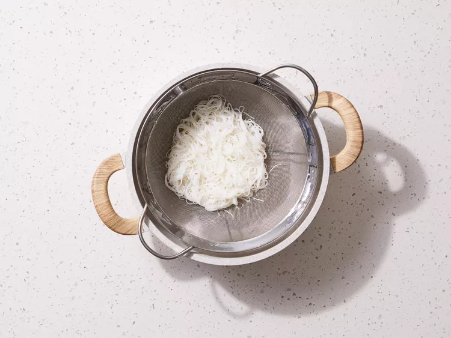
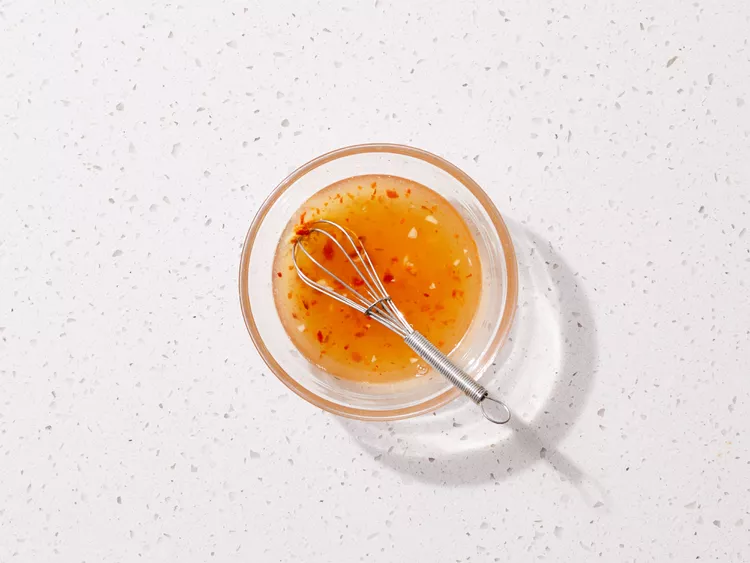

Vietnamese Fresh Spring Rolls
Ingredients
- 2 ounces rice vermicelli noodles
- 8 rice wrappers (8.5 inch diameter)
- 8 large cooked shrimp, peeled, deveined, and cut in half
- 2 leaves lettuce, chopped
- 3 tablespoons chopped fresh mint leaves
- 3 tablespoons chopped fresh cilantro
- 1 1/3 tablespoons chopped fresh Thai basil
- ½ teaspoon chili garlic sauce
Sauces
- 1/4 cup water
- 2 tablespoons fresh lime juice
- 2 tablespoons white sugar
- 4 teaspoons fish sauce
- 1 clove garlic, minced
- 3 tablespoons Hoisin sauce
- 1 teaspoon finely chopped peanuts
Steps
- Fill a large pot with lightly salted water and bring to a rolling boil; stir in noodles and return to a boil. Cook noodles uncovered, stirring occasionally, until tender yet firm to the bite, 3 to 5 minutes; drain and set aside to cool.

- Fill a large bowl with warm water. Dip one wrapper into the warm water for 1 second to soften.

- Lay wrapper flat; place 2 shrimp halves, some cooled noodles, lettuce, mint, cilantro, and basil in a line across middle of wrapper, leaving about 2 inches uncovered on each side.

- Fold opposing uncovered sides of wrapper inward, then tightly roll 1 of the opposing edges of the wrapper around the filling. Repeat with remaining ingredients.

- Combine water, lime juice, sugar, fish sauce, garlic, and chili sauce in a small bowl; set aside.

- Combine hoisin sauce and peanuts in a separate small bowl; set aside.

- Serve spring rolls with both sauces for dipping.

Home